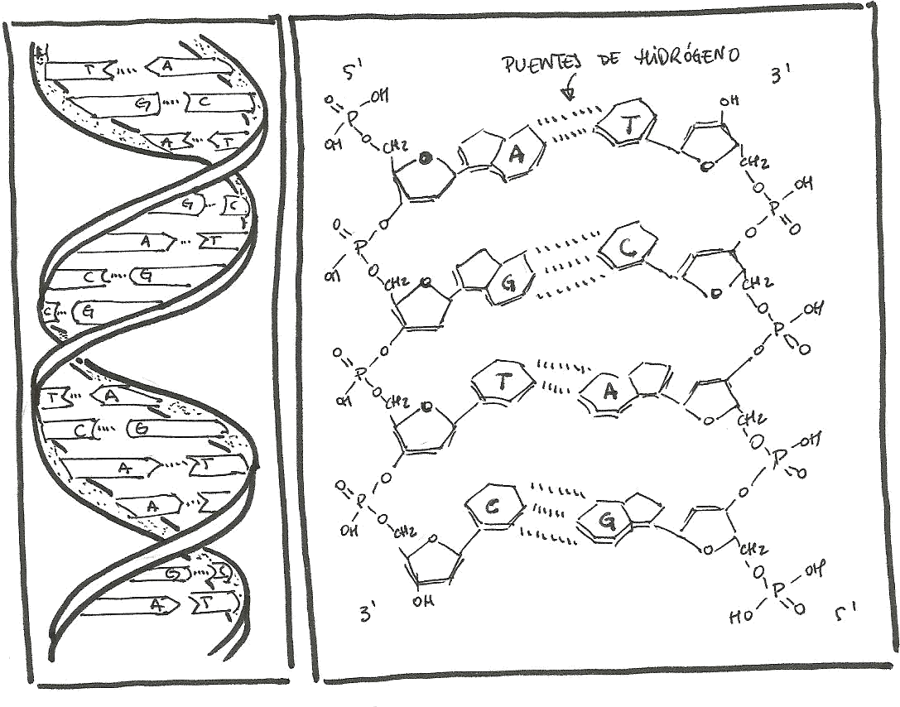
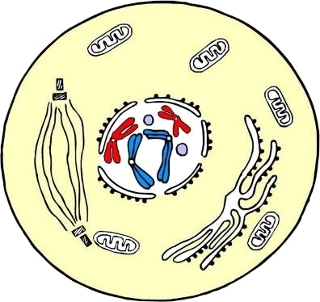
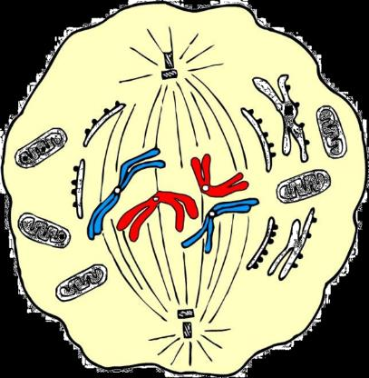
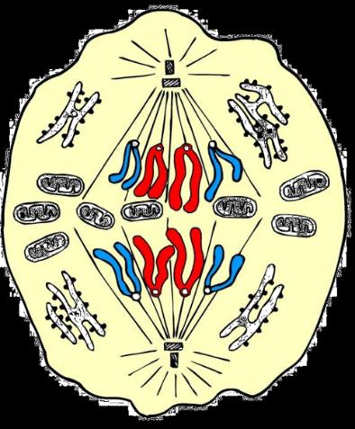
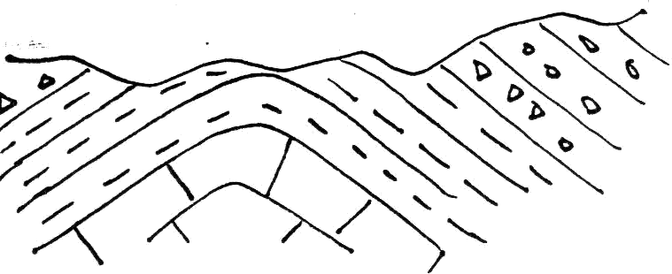
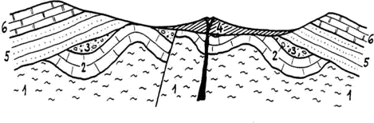
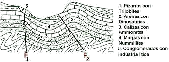
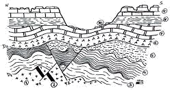

Repaso del global de Biología y Geología
Toda la materia del libro de 4º ESO, resumida, organizada por unidades y con preguntas de autoevaluación para que llegues al examen sabiéndotelo.
Cómo usar esta web
- Usa el menú lateral para ir a cada unidad. En móvil, pulsa el botón ☰.
- Cada unidad tiene: resumen de teoría, tarjetas de conceptos clave (pulsa para ver la respuesta) y un test al final.
- En el test, pulsa una opción y verás si es correcta y por qué.
- La barra superior te muestra tu avance de lectura en la unidad actual.
Plan de estudio sugerido (7 días)
Día 1–2 · Geología base
Unidad 1 (rocas, minerales, cristales) + Unidad 5 (estratigrafía y fósiles). Conceptos visuales, fáciles de retener.
Día 3–4 · Biología celular
Unidad 2 (biomoléculas y células) + Unidad 3 (mitosis y meiosis). Cuidado con haploide/diploide.
Día 5 · Genética
Unidad 4. La más "de problemas": practica cruces y leyes de Mendel.
Día 6 · Historia y evolución
Unidad 6 (eras geológicas) + Unidad 7 (teorías evolutivas).
Día 7 · Ecosistemas + repaso
Unidad 8 y repaso de los tests que fallaste.
Truco
Si te quedas atascado en un concepto, búscalo en su tarjeta clave. Repetir el test 2 veces fija mucho más que releer.
Rocas, minerales y cristales
Rocas
Las rocas se clasifican según su origen (cómo se han formado) en tres grandes grupos:
1. Rocas magmáticas (ígneas)
Se forman al solidificarse el magma por enfriamiento. Cuanto más despacio se enfría (más profundidad), más ordenada es su estructura.
- Plutónicas: enfrían en profundidad, cristales visibles → granito, sienita, gabro.
- Filonianas: el magma asciende por grietas, profundidad intermedia → pórfidos, pegmatitas.
- Volcánicas: enfrían en superficie (volcán) → basalto, obsidiana, pumita, fonolita.
2. Rocas sedimentarias
Se forman por acumulación, cementación y compactación de sedimentos (fragmentos de otras rocas meteorizadas, transportados por agua, viento o gravedad, depositados en una cuenca).
- Detríticas: clasificadas por tamaño/forma de los fragmentos → areniscas, arcillas, conglomerados, brechas.
- No detríticas (químicas): precipitan de disoluciones sobresaturadas de sales → calizas, dolomías, sílex.
3. Rocas metamórficas
Se forman por cambios de estructura de otra roca por efecto de presión y temperatura, sin llegar a fundirse → mármol, pizarra, esquisto, gneis, serpentinita.
Minerales
Se clasifican por su composición química (sales, oxosales, óxidos, sulfuros…). Para identificarlos usamos propiedades físicas específicas (no dependen de la cantidad):
Cristales y clave dicotómica
Vidrio ≠ cristal. El cristal tiene orden interno (sus átomos crecen ordenadamente desde una "semilla"); el vidrio es un sólido desordenado. Los cristales existen en la naturaleza y también se pueden fabricar artificialmente porque conocemos su secreto: el orden interno.
Tarjetas de conceptos clave
Autoevaluación
Biomoléculas y células
Bioelementos
Elementos que forman los seres vivos.
- Primarios: C, H, O, N, P, S → ~97% de la materia viva.
- Secundarios y oligoelementos: en muy poca cantidad, pero vitales.
El carbono es especial: forma enlaces covalentes con otros carbonos, creando cadenas lineales y ramificadas → esqueletos de las biomoléculas orgánicas.
Biomoléculas
Inorgánicas
- Agua
- Sales minerales
- Gases (O₂ y CO₂)
Orgánicas
- Glúcidos
- Lípidos
- Proteínas
- Nucleótidos y ácidos nucleicos
Agua
La molécula más abundante (20% en hueso, hasta 85% en células cerebrales). Funciones: termorreguladora, transporte, protección física, mantenimiento del pH.
Gases
O₂ (respiración celular → obtener energía) y CO₂ (fotosíntesis, fase oscura → síntesis de glúcidos). También aparecen como desecho metabólico.
Sales minerales
- Insolubles: función estructural → CO₃Ca (caparazones, equinodermos), silicatos (diatomeas), fosfatos de calcio (huesos).
- Solubles: disociadas en iones → función osmótica, regulación del pH, impulso nervioso, contracción muscular.
Glúcidos (azúcares / hidratos de carbono)
- Monosacáridos (más simples): función estructural (ribosa/desoxirribosa en ácidos nucleicos) y energética (glucosa, fructosa — energía inmediata, reserva pequeña).
- Polisacáridos (muchos monosacáridos unidos): estructural (celulosa, pared vegetal) y reserva (almidón en plantas, glucógeno en animales).
Lípidos
Insolubles en agua, solubles en disolventes apolares, untuosos. Grasas y aceites (reserva), fosfolípidos (membranas), vitaminas A, E, K, D y hormonas.
Proteínas
Cadenas de aminoácidos. El grupo más variado e importante ("ante la duda: proteína"). Funciones: enzimática, hormonal, defensiva (anticuerpos), transporte (hemoglobina), estructural (colágeno, queratina), contráctil (actina/miosina), reserva.
Nucleótidos y ácidos nucleicos
| ADN | ARN | |
|---|---|---|
| Pentosa | Desoxirribosa | Ribosa |
| Bases | A, T, G, C | A, U, G, C |
| Cadenas | Doble hélice | Una cadena (más sencillo) |
| Función | Información genética | Síntesis de proteínas (mensajero, ribosómico, transferencia) |
Estructura del ADN

La célula
Teoría celular (s. XIX): (1) todos los seres vivos están formados por células; (2) la célula es la unidad fisiológica; (3) toda célula procede de otra por división; (4) [añadido] el material genético pasa de una célula a otra en la división. Robert Hooke acuñó "célula" al observar corcho.
| Procariota | Eucariota | |
|---|---|---|
| Núcleo | No (ADN libre, 1 trozo) | Sí |
| Orgánulos con membrana | No | Sí |
| Tamaño | Menor | Mayor |
| Ejemplos | Bacterias | Animales, plantas, hongos, protozoos, algas |
Orgánulos (¡saber cuáles son exclusivos!)
- Pared celular — exclusiva vegetal (celulosa), estructural.
- Membrana plasmática — doble capa de fosfolípidos + proteínas; regula el transporte.
- Citoplasma (citosol).
- Ribosomas — fabrican proteínas, sin membrana.
- Citoesqueleto — filamentos de proteína, estructural.
- Centrosoma/centriolos — exclusivo animal; forman el huso mitótico (las vegetales lo forman sin centriolos).
- Retículo endoplasmático — Rugoso (RER, con ribosomas → proteínas) / Liso (REL → lípidos).
- Aparato de Golgi — recibe, almacena y transporta; forma lisosomas.
- Lisosomas — digestión celular.
- Vacuolas — almacenamiento (grandes en vegetales).
- Cloroplastos — exclusivo vegetal, fotosíntesis (clorofila).
- Mitocondrias — todas las eucariotas, respiración celular (energía).
- Núcleo — doble membrana con poros, contiene el ADN.
Diagramas: identifica las partes
Célula animal
Célula vegetal
Membrana plasmática
Tarjetas de conceptos clave
Autoevaluación
Divisiones celulares
Ciclo celular
Todo lo que le ocurre a una célula desde que se forma hasta que se divide.
- G0: la célula diferenciada cumple su función.
- Interfase (preparación): G1 → S (síntesis) → G2. En la fase S se replica todo el ADN, para que las dos células hijas tengan igual cantidad y tipo.
- M: división celular (normalmente mitosis).
Haploide y diploide
Los números de cromosomas son siempre pares porque la información va por duplicado (uno del padre, otro de la madre). Humano: 2n = 46, n = 23. Caballo: 2n=64, n=32. Al unirse dos gametos haploides se forma un individuo diploide.
Mitosis
Una célula → 2 células iguales entre sí e iguales a la madre. Tras la interfase hay 4 trozos de ADN de cada tipo.
- Profase: la más larga. La cromatina se condensa en cromosomas, desaparece la membrana nuclear, los centriolos migran a polos opuestos y fabrican el huso.
- Metafase: los cromosomas se unen por el centrómero al huso y se alinean en el ecuador.
- Anafase: el huso se acorta y arrastra las cromátidas hermanas a polos opuestos.
- Telofase: las cromátidas se descondensan y se reforman las membranas nucleares.
- Citocinesis: división del citoplasma → 2 células.
Fases de la mitosis (dibujos del libro)



Meiosis
División especial para formar gametos. Dos divisiones consecutivas → 4 células haploides con ADN diferente. Empieza con interfase (célula 4n).
- Profase I: los cromosomas homólogos intercambian trozos de ADN → recombinación genética (las 4 cromátidas quedan distintas).
- Anafase I: se separan cromosomas enteros (no cromátidas) hacia cada polo.
| Mitosis | Meiosis | |
|---|---|---|
| Células hijas | 2 | 4 |
| Ploidía hijas | Diploides (2n) | Haploides (n) |
| ¿Iguales a la madre? | Sí | No (recombinación) |
| Finalidad | Crecimiento, reparación | Reproducción (gametos) |
| Divisiones | 1 | 2 consecutivas |
Tarjetas de conceptos clave
Autoevaluación
Genética
Experimentos de Mendel
Mendel (1822–1884) trabajó con guisante (Pisum sativum), usó razas puras y se fijó en un carácter por experimento, contando estadísticamente la descendencia.
1ª Ley · Uniformidad de la F1
Al cruzar dos razas puras (AA × aa), toda la F1 es igual (Aa, fenotipo dominante: amarillo).
2ª Ley · Segregación
Los dos factores de un carácter se separan al formar los gametos (meiosis) y se recombinan al azar en la fecundación. Cruce Aa × Aa → 3:1 (75% amarillo, 25% verde).
3ª Ley · Independencia de caracteres
Cada carácter se hereda independientemente. Dihíbrido AaBb × AaBb → proporción 9:3:3:1. (Excepción: genes ligados.)
Terminología (¡imprescindible!)
Ejemplo de cruce dihíbrido (9:3:3:1)
AaBb × AaBb (amarillo-liso × amarillo-liso):
→ 9 amarillo-liso : 3 amarillo-rugoso : 3 verde-liso : 1 verde-rugoso.
Casos particulares
Herencia intermedia
Ningún alelo domina (dondiego, Mirabilis jalapa): RR (rojo) × BB (blanco) → F1 toda rosa (RB). F2: 25% rojo : 50% rosa : 25% blanco.
Codominancia
Se manifiestan los dos alelos a la vez (ej. manchas rojas y blancas).
Grupos sanguíneos AB0
Tres alelos: A y B codominantes entre sí, ambos dominan sobre 0 (recesivo).
| Genotipo | Fenotipo |
|---|---|
| AA, A0 | Grupo A |
| BB, B0 | Grupo B |
| AB | Grupo AB |
| 00 | Grupo 0 |
Herencia del sexo y ligada al sexo
Par 23 = cromosomas sexuales. Mujer XX, hombre XY. Los otros 22 pares = autosomas. El conjunto = cariotipo. El padre determina el sexo (aporta X o Y): 50% niño / 50% niña.
- Daltonismo: XdXd daltónica · XDXd portadora normal · XdY hombre daltónico.
- Una mujer es portadora si lleva el alelo recesivo en uno de sus dos X.
Tarjetas de conceptos clave
Autoevaluación
Estratigrafía, sedimentos y fósiles
Estratos y deformaciones
Estratos: capas de materiales depositadas unas sobre otras. Lo normal es que sean horizontales, pero las fuerzas tectónicas las deforman.
Tipos de deformación de las rocas:
- Elástica: recupera su forma al cesar el esfuerzo (terremoto).
- Plástica: queda deformada → pliegues.
- Frágil: se rompe → fallas y diaclasas.
Pliegues
Partes: charnela (zona de mayor curvatura), flancos, plano axial, buzamiento (ángulo del plano). Tipos: anticlinal/sinclinal, simétrico/asimétrico, recto/inclinado/tumbado/invertido.
Diaclasas y fallas
- Diaclasa: fractura sin desplazamiento (estratos continuos).
- Falla: fractura con desplazamiento de bloques → normal, inversa, horizontal.
Principios de estratigrafía
- Horizontalidad: los estratos se depositan horizontales. Si los ves horizontales, no ha pasado nada después.
- Superposición: el estrato inferior es más antiguo que el superior (excepto en pliegue tumbado).
- Sucesión de fenómenos: todo fenómeno (falla, pliegue, intrusión, erosión…) que afecta a un estrato es posterior a su formación.
Ejemplo de interpretación: 1) depósito de estratos → 2) plegamiento → 3) erosión de la capa superior.
Corte geológico de ejemplo (libro)

Practica: interpreta estos cortes (ejercicios del libro)



Fósiles en estratos
Un fósil aporta mucha información: el estrato se formó cuando murió el ser vivo; si era marino, esa zona estuvo bajo el mar (¡fósiles de erizo en los Pirineos!).
Tarjetas de conceptos clave
Autoevaluación
Historia de la Tierra
Fósiles
Tipos: partes del cuerpo, o restos de actividad → icnitas (huellas), coprolitos (excrementos), nidos, huevos.
Se forman sobre todo en rocas sedimentarias (por enterramiento en sedimentos). Otras formas: conservación en hielo (mamuts de Siberia), en petróleo/brea (ambiente anóxico) y en ámbar (resina fosilizada — el del ADN de Jurassic Park).
Dataciones
- Relativa: por el estrato (principio de superposición). Mismo estrato = misma época.
- Absoluta: con isótopos radiactivos. Cada isótopo tiene un periodo de semidesintegración (tiempo en que se desintegra la mitad). Midiendo cuánto queda, se calcula la edad. En rocas magmáticas se cuenta desde que solidifica; en fósiles, desde la muerte.
Etapas de la historia de la Tierra
La Tierra tiene unos 4500 millones de años (m.a.). Las fronteras de las eras son arbitrarias pero útiles.
| Era / Eón | Tiempo | Vida destacada |
|---|---|---|
| Precámbrico (Hádico/Arcaico/Proterozoico) | 4500–540 m.a. | Bacterias (estromatolitos), 1as eucariotas (~1600 m.a.), fauna de Ediacara |
| Paleozoica | 540–250 m.a. | "Explosión" de vida. Trilobites (fósil guía), 1os peces, anfibios, reptiles, helechos, insectos. Termina en la mayor extinción (~80% especies) |
| Mesozoica | 250–65 m.a. | Dinosaurios. Ammonites y belemnites (fósil guía). 1as aves (Archaeopteryx), 1os mamíferos. Termina con la extinción de los dinosaurios |
| Cenozoica | 65 m.a.–actualidad | Mamíferos y aves, angiospermas. El Cuaternario = aparición del ser humano |
Tarjetas de conceptos clave
Autoevaluación
Evolución
¿Qué es la evolución?
La evolución es un hecho, pero el proceso no se puede estudiar con experimentos directos (es muy lento) → se estudia de forma indirecta, sobre todo con fósiles.
Teorías evolutivas
Contexto del s. XIX: "la crisis" (Malthus: exceso de población + escasez de recursos = lucha por la supervivencia).
Lamarck
- Los seres vivos tienden a ser más complejos.
- Necesitan cambiar para sobrevivir: "la función crea el órgano".
- Los caracteres adquiridos se heredan.
Jirafa: estira el cuello esforzándose y lo hereda. ❌ Pega: los caracteres adquiridos NO se heredan.
Darwin y Wallace
- Las poblaciones crecen demasiado (no sobreviven todos).
- Hay variabilidad entre individuos de una especie.
- Selección natural: sobreviven y se reproducen los mejor adaptados; heredan su ventaja.
Jirafa: ya había jirafas de cuello más largo; esas sobrevivían mejor. ❌ Pega: no explicaba el origen de las variaciones ni cómo se heredan (aún no se conocía la genética).
Teoría sintética (s. XX)
Darwin + genética de Mendel. Una mutación genética crea la característica nueva; si da ventaja, se selecciona y se hereda. Sucesivas mutaciones cambian la especie poco a poco.
Otras ideas
- Selección artificial: la que hace el ser humano (ganadería/agricultura) → muchas razas domésticas. Ayuda a entender la natural.
- Gradualismo vs. saltacionismo (Gould — "equilibrio puntuado"): si fuera gradual habría fósiles intermedios y casi no existen; propone cambios bruscos y mutaciones pocas pero importantes. Ej. casi único de serie gradual: la evolución del caballo (eohippus → equus).
- Neutralismo (Kimura): ataca la idea de "ventaja". La deriva genética por encima de la selección natural: una población aislada hereda una característica sin ser mejor ni peor.
- Aislamiento geográfico: clave para formar especies nuevas (lagartos de Canarias, pinzones de Galápagos). También aislamiento reproductivo, de comportamiento, químico.
- ADN: comparándolo se establecen parentescos. Pega a "un único origen": recordar la explosión del Paleozoico.
Origen de la vida y de la persona humana
La ciencia no puede explicar el origen de la vida (sin experimento posible). Oparin (1924), panspermia (origen extraterrestre — solo traslada el problema), experimento de Miller (forma biomoléculas, no células).
Tarjetas de conceptos clave
Autoevaluación
Ecosistemas
¿Qué es un ecosistema?
- Factores abióticos: condiciones físico-químicas (determinan qué seres vivos viven allí).
- Factores bióticos: los seres vivos y sus relaciones.
- Población: conjunto de organismos de la misma especie.
- Comunidad / biocenosis: conjunto de poblaciones de un ecosistema.
- Hábitat: espacio que ocupa una especie. Biotopo: lugar + factores abióticos.
Relaciones tróficas
| Nivel trófico | De qué se alimenta |
|---|---|
| Productores (autótrofos) | Fabrican materia orgánica de la inorgánica (CO₂). Plantas, algas, muchas bacterias. Imprescindibles. |
| Consumidores primarios | De los productores (herbívoros) |
| Consumidores secundarios | De los primarios |
| Consumidores terciarios/cuaternarios | Superdepredadores |
| Descomponedores | De restos de seres vivos muertos |
Cadena trófica: hierba → ratón → zorro. Red trófica: interconexión de todas las cadenas (más realista).
Ciclos de la materia
La materia se recicla. Ciclo del carbono: productores captan CO₂ → fabrican glúcidos → todos respiran y devuelven CO₂ al aire. También hay ciclos del nitrógeno, oxígeno, fósforo…
Dinámica de poblaciones
Las poblaciones cambian en equilibrio dinámico (siempre hay cambios). Las fluctuaciones están relacionadas (ej. conejos y linces).
Relaciones entre seres vivos
| Relación | Quién gana/pierde | Ejemplo |
|---|---|---|
| Depredador-presa | Uno gana / otro pierde | León y gacela |
| Competencia | Todos salen perjudicados | Leones e hienas; ciervos por la hembra |
| Mutualismo | Ambos ganan (no permanente) | Abeja y flor |
| Simbiosis | Ambos ganan (permanente, dependencia) | Pez payaso y anémona; bacterias intestinales |
| Comensalismo | Uno gana / al otro le da igual | Peces que comen sobras de otros grandes |
| Tanatocresia | Aprovecha restos de un muerto | Cangrejo ermitaño |
| Foresia | Uno usa a otro para moverse | Semilla en el plumaje de un ave |
| Parasitismo | Uno gana dañando (sin matar) | Piojos, garrapatas |
Sucesiones y nicho
- Sucesión primaria: colonización de un terreno por primera vez (lava nueva de La Palma).
- Sucesión secundaria: recuperación tras destruir parcialmente una comunidad.